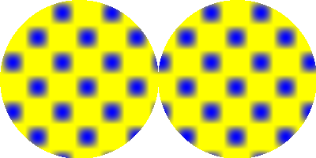

CustomGradient()
语法
CustomGradient(@GradientCallback())概要
设置绘图梯度有一个自定义形状，由给定的回调过程定义.
参数
@GradientCallback() 回调过程的地址来定义渐变。回调必须有如下形式： Procedure.f GradientCallback(x, y) ; ; Return a value between 0.0 and 1.0 to define the gradient for the x/y position. ; ProcedureReturn 1.0 EndProcedureThe callback will be called for every pixel that is part of a drawing operation. The callback has to return a value between 0.0 and 1.0 (not a color value) to define the gradient value at the given position.
和y在回调坐标接收的X总是相对于绘图输出的左上角. 此坐标不受调用 SetOrigin() 或 ClipOutput()的影响。
返回值
无.
备注
By default the value 0.0 represents the current background color and the value 1.0 represents the current front color. Additional colors can be added to the gradient with the GradientColor() command.
此回调将被调用多次 （用于绘制每个像素） 所以它应该是很小，速度快，对绘图的性能没有太大的影响。
Note: This command only has an effect with ImageOutput() and CanvasOutput(). The gradient only affects the drawing commands when #PB_2DDrawing_Gradient is set with the DrawingMode() command.
示例
Procedure.f GradientCallback(x, y) ProcedureReturn Sin(x * 0.1) * Sin(y * 0.1) ; will be between 0 and 1 EndProcedure If OpenWindow(0, 0, 0, 400, 200, "2DDrawing Example", #PB_Window_SystemMenu | #PB_Window_ScreenCentered) If CreateImage(0, 400, 200) And StartDrawing(ImageOutput(0)) Box(0, 0, 400, 200, $FFFFFF) DrawingMode(#PB_2DDrawing_Gradient) BackColor($00FFFF) FrontColor($FF0000) CustomGradient(@GradientCallback()) Circle(100, 100, 100) Circle(300, 100, 100) StopDrawing() ImageGadget(0, 0, 0, 400, 200, ImageID(0)) EndIf Repeat Event = WaitWindowEvent() Until Event = #PB_Event_CloseWindow EndIf

参阅
GradientColor(), ResetGradientColors(), LinearGradient(), CircularGradient(), EllipticalGradient(), BoxedGradient(), ConicalGradient(), DrawingMode()
已支持操作系统
所有